Winston Lutz module¶
The module can be used in two ways:
Acquire various images with different gantry, collimator and couch angles, and check the Use Pylinac? checkbox.
Acquire a minimal set of gantry/collimator images (4 or 8 images in a predefined order), and uncheck the Use Pylinac? checkbox. Pylinac will analyze each image, but the results will be compiled independent from Pylinac. This way is good for doing the end-to-end test, particularly on Elekta linacs.
Examples of use are at the bottom of the page.
A minimal set of images¶
A minimal set of gantry/collimator images is a set of images that you must acquire in order to correctly determine the position of the MV isocenter. This must be done independently from potential collimator asymmetry or miss-calibration of MLCs or jaws. The standard set of images for Elekta and Varian is normally:
Gantry |
180 |
180 |
270 |
270 |
0 |
0 |
90 |
90 |
Collimator |
90 |
270 |
270 |
90 |
90 |
270 |
270 |
90 |
It is possible to use other angles, however, it is strongly suggested to use the ones listed above. You may change the collimator angle, if you wish. For Elekta, for example, you could use 0/180 instead of 90/270. But then the sag of the collimator will have a larger influence on the result at gantry 90/270.
Some people may need to use SRS cones for treatment. In this case the appropriate sequence is:
Gantry |
180 |
270 |
0 |
90 |
Collimator |
0 |
0 |
0 |
0 |
The field can be of any size, it doesn’t even have to be symmetric. It is only vital that all beams use exactly the same MLC and jaw configurations! The above mentioned sequences are used with “Use Pylinac?” checkbox unchecked.
Options¶
- Use pylinac? checked
Full scale Pylinac analysis is performed. Once you tick the checkbox, a new table will show up underneath (Angles for pylinac). There you can enter angles for each image. If you are doing the analysis on a Varian linac, do not enter any values because Pylinac will read the angles from dicom tags. If, on the other hand, you are doing this test on an Elekta linac, then you must enter in angles, because dicom tags are not present. You may image the BB with any gantry/collimator/couch configuration, as long as Pylinac will be able to analyze it.
- Use pylinac? unchecked
Now the QAserver will assume a specific acquisition order. Namely, the two sequences defined above. No dicom tags will be read, nor is it necessary to define specific angles. In this situation Pylinac will analyze each image, but the end results will be calculated independently of Pylinac.
- Select multiple series?
When you acquire images with different couch angles on a Varian linac, each image will be imported into Orthanc as a separate series. By ticking this box you have the option of selecting multiple series for analysis.
- Zoom in on field?
If checked, the image display will zoom-in on the field.
- Clip box
Sometimes images have unwanted artifacts at the edges that could disturb the calculation of field CAX. Here you can enter the size of the central portion of the image beyond which pixel values will be set to background signal. If you don’t want to clip the image, put 0.
Things you should know¶
If Use pylinac? is unchecked, the acquisition order is important:
Warning
QAserver will assign gantry/collimator angles according to acquisition times. Before you use this software, make sure that QAserver is reading acquisition times correctly. Also, observe the gantry/collimator order.
If Use pylinac? is unchecked, the analysis will take twice as long. The reason is that each image is analyzed twice because of the way QAserver uses Pylinac.
If Use pylinac? is unchecked and neither 4 nor 8 images are contained in the series, only image-wise analysis will be returned. More results can be obtained if you check Use Pylinac? and enter the appropriate angles in the table Angles for pylinac.
Station name is read from the first image of the series.
Interpreting results¶
- Images
- dx, dy
Position of the center of the field with respect to the center of the BB.
- Red cross
Center of the BB.
- Blue cross
Center of the field.
- Yellow dot
Center of the image (EPID).
- Blue contour
50%-edge of the field.

- Image Analysis
- CAX x, CAX y
Coordinates of field center with respect to the EPID.
- BB x, BB y
Coordinates of the center of the BB with respect to the EPID.
- 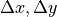
The difference between CAX and BB.
- R
The length of the vector from BB to CAX.
Moving the BB into the isocenter - Use Pylinac? unchecked
If 8 images were acquired in the correct order:
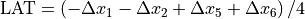
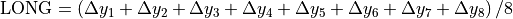
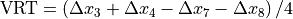
If 4 images were acquired in the correct order:
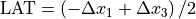
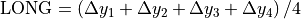
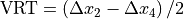
Beam deviation - Use Pylinac? unchecked
It is possible to determine crossplane (A-B) deviations of the beam from the ideal position. Independently from the previous section we have by taking all images into account:
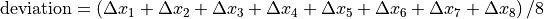
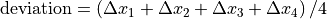
Or by just observing those at gantry 180/0 (those that have little effect of collimator sag):
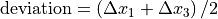
This result is independent of the precision with which the BB is positioned into the isocenter.
- Effect of collimator rotation - Use Pylinac? unchecked
It only works with 8 images. Say your collimator aperture is slightly asymmetrical, or perhaps the axis around which the collimator spins is not so stable. When you rotate the collimator, you will notice that the field CAX will move from one point to the other. QAserver will give you a simple estimate of this displacement by averaging each image pair (1,2), (3,4), (5,6), (7,8) and calculating the shift from this average for each image.
- Isocenter size - Use Pylinac? unchecked
A simple evaluation of the size of the point cloud.
- Gantry iso size is calculated as the length of the vector to the CAX point that is farthest from the center of the CAX cloud:
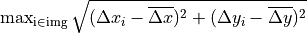
- Collimator iso size is
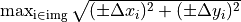,
where 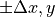 is taken from the previous section (Effect of collimator rotation).
- EPID movement - Use Pylinac? unchecked
Say that the BB accurately represents the isocenter. Normally you would like your EPID to be positioned in such a way that the distance between the EPID center and the center of the BB does not exceed some tolerance (2 mm or 3 mm). The maximum EPID-BB distance is just:
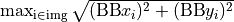
- Scatter diagram
The BB is in the center of the diagram. Blue dots represent field CAX, yellow dots the center of the EPID. The green circle corresponds to the normal tolerance, the red circle is the action tolerance. Both are defined in the configuration file.
- Status
You can get either Passed, Borderline or Failed. If you are using 4 or 8 images, then you have the option of applying the tolerance to either each image in the series, or to the section Effect of collimator rotation where radius R is calculated by averaging over collimator pairs. See your configuration file.
Examples¶
Example 1¶
Task: find the average MV isocenter of the linac and test the position of the couch axis of rotation for radiosurgery.
If you are doing this on an Elekta linac, you can use their flexmap calibration procedure. In any case, acquire a sequence of 8 images as stated at the beginning. Analyze them, and get the shifts. Apply the shifts to the BB and repeat the acquisition. Check that the residual shifts are small, say, smaller than 0.1 mm in any direction. If your BB does not have micrometer screws, you can use the robotic couch to make the shifts.
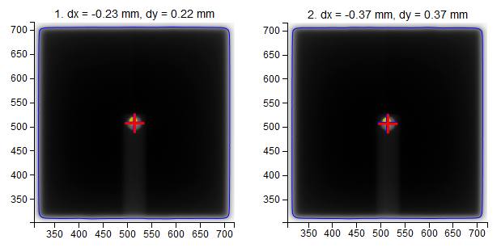 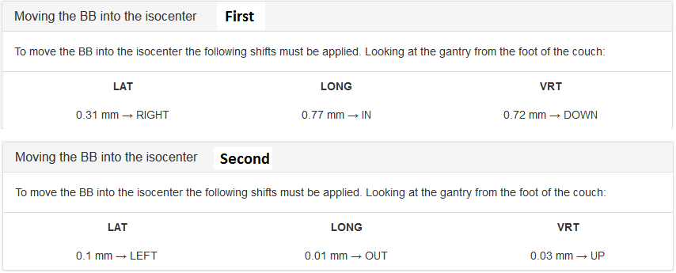 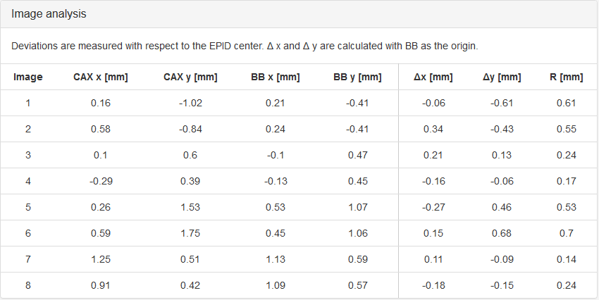 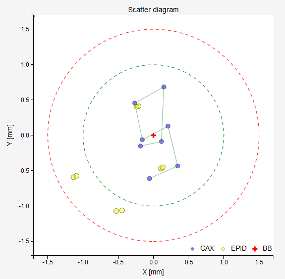The results of the last analysis can be reviewed on the scatter diagram. You can see that the BB is well aligned with the average MV isocenter. There is a small collimator asymmetry noticeable at all gantry angles. And there is no beam deviation in the lateral direction. You will also notice a 1.3 mm gantry displacement in the longitudinal direction, which is perfectly normal for this type of linac.
At this point you could make a CBCT scan of the BB and check whether the imager is showing that the BB is in the isocenter.
Testing the couch is easy. Put gantry and collimator to 0. Leave the BB exactly where it is. Then acquire images at several couch angles with the same gantry and collimator. You can use a series of angles like such:
Couch |
0 |
30 |
60 |
90 |
60 |
30 |
0 |
330 |
300 |
270 |
300 |
330 |
0 |
You can see that moving the couch only slightly moves the BB away from the field CAX. Never does the distance between the BB and the CAX go beyond 1 mm. On the scatter plot you can also observe that while gantry and collimator are stationary, there is some movement of the EPID. This is because in this plot the BB is fixed in the center. But in reality it is the BB that is moving, not the EPID or the CAX. A better representation of what is going on is offered in the section Axis wobble (couch wobble).
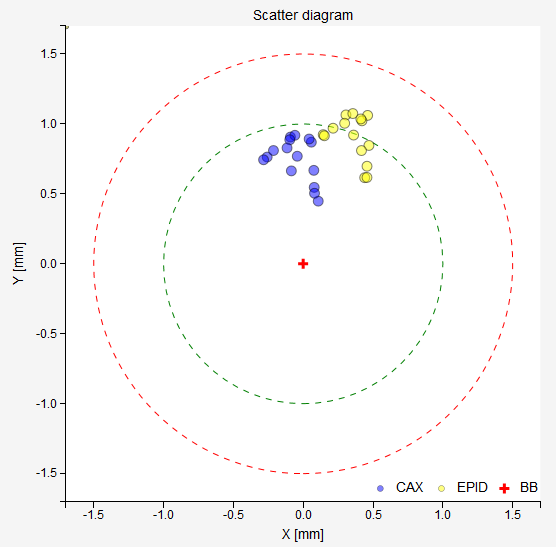 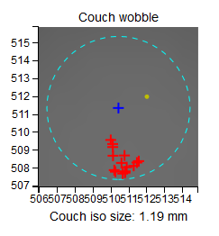Example 2¶
With the WL test you can determine if your beam has a lateral deviation from the ideal position. See an example scatter plot below. All blue CAX points are shifted to the right. This does not correspond to an error in the position of the BB, but to an error in the way the beam is targeting the BB. Indeed, the results show exactly this: the BB is perfectly aligned with the average MV isocenter, however there is a 0.5 mm lateral deviation of the beam.
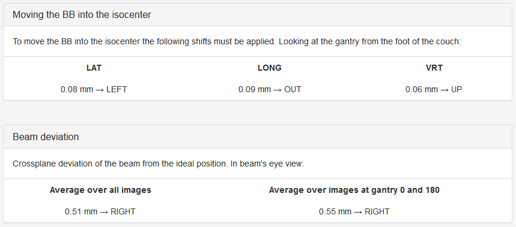 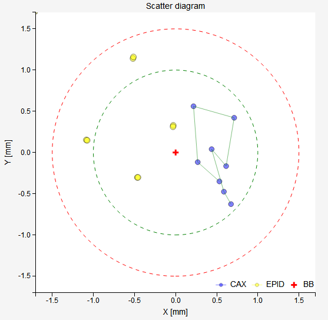Note
Longitudinal deviations of the beam cannot be detected this way. Unless you take the 6 MV beam as the reference.